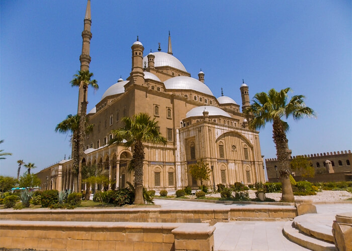
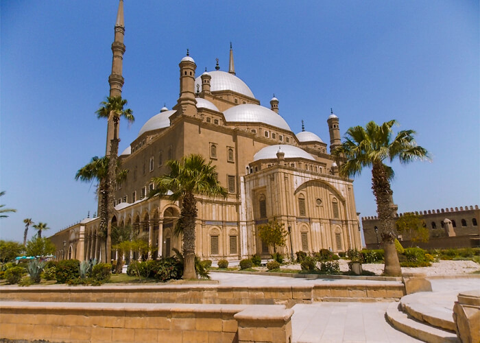

Overview
Cairo, the capital of Egypt, is a vibrant metropolis that blends ancient history with modern life. Founded over a thousand years ago, it boasts iconic landmarks like the Pyramids of Giza, the Sphinx, and the historic Islamic Cairo district, filled with mosques and markets. The city sits on the banks of the Nile River and serves as a cultural and political hub for the Arab world. Cairo is known for its rich history, diverse architecture, and lively atmosphere, making it a fascinating destination for travellers and scholars alike. Its museums, such as the Egyptian Museum, showcase a wealth of artefacts that highlight Egypt remarkable past.
Gallery
 



The Egyptian Museum
The Egyptian Museum in Cairo is a major museum that showcases ancient Egyptian artefacts. Opened in 1902, it features over 120,000 items, including the treasures of Tutankhamun and various mummies. The museum's neoclassical building is home to important historical objects that give insight into the lives of pharaohs and ancient Egyptian culture. It's a must-visit for anyone interested in Egypt's rich history.